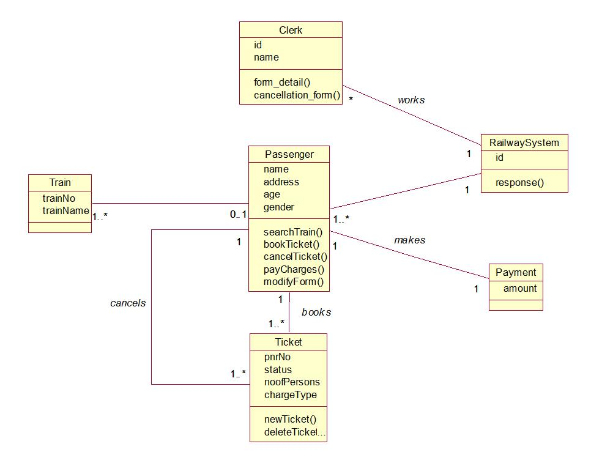
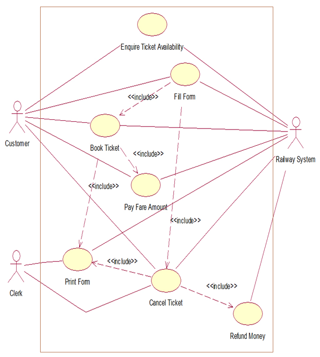
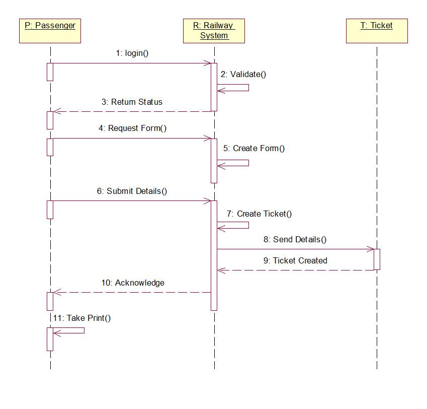
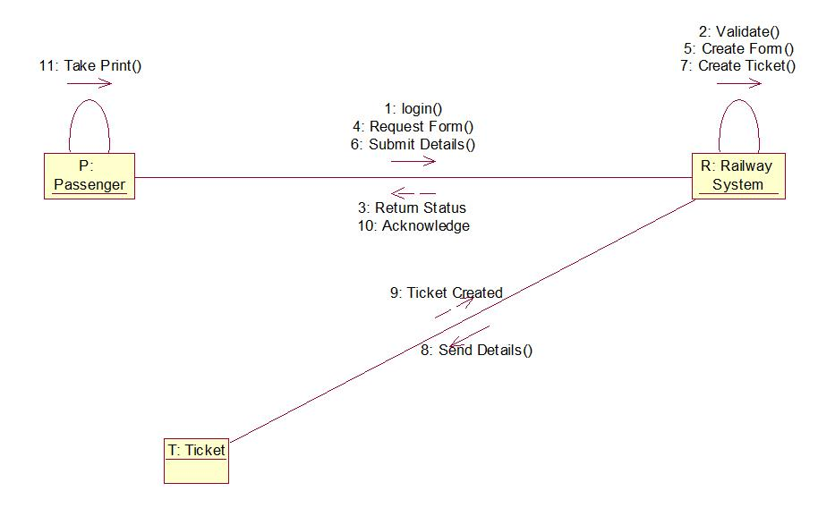
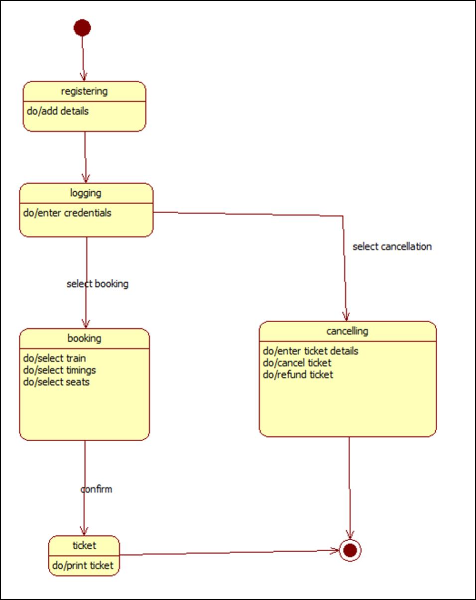
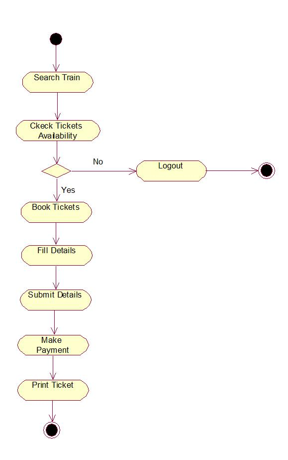
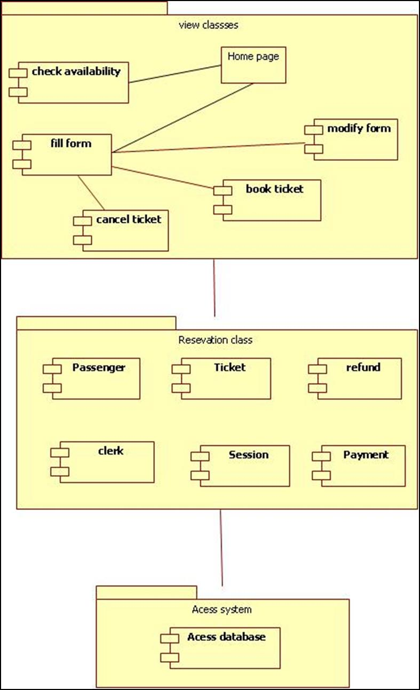
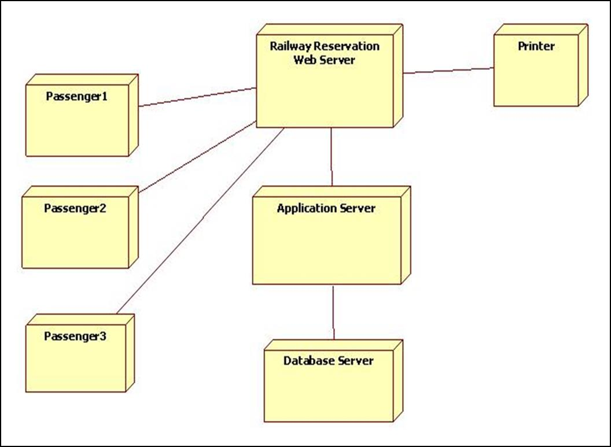

U
ETORSANIMATED EXCALIDRAW · STARUML LITE STYLE
Week 4 & 5 · UML Design Models
EXCALIFRAME PRESENTS
ETORS UML diagrams, drawn step by step
Watch each model move from the StarUML Lite toolbox onto the canvas, then settle into an Excalidraw-style design board.
Class Diagram · ETORSModel → Add Diagram → Class
1 / 8

Classes, attributes, operations and associations are placed on the canvas.
➜
Use Case Diagram · ETORSActors outside · use cases inside
2 / 8

Passenger, Cab Driver and Administrator connect to ETORS workflows.
➜
Sequence Diagram · BookingTime flows downward
3 / 8

Lifelines and synchronous messages trace the complete booking lifecycle.
➜
Collaboration Diagram · BookingNumbered messages · object links
4 / 8

Objects exchange numbered messages across direct links.
➜
Statechart Diagram · BookingStates · guards · transitions
5 / 8

Confirmed, cancelled and related states are connected by guarded transitions.
➜
Activity Diagram · ReservationSwimlanes · control flow
6 / 8

Passenger, Django System and Administrator lanes show the workflow.
➜
Component Diagram · ETORSDependencies · provided interfaces
7 / 8

Browser, Django modules, ORM, services and external integrations connect.
➜
Deployment Diagram · ProductionNodes · artifacts · communication paths
8 / 8

User device, Render web service and PostgreSQL form the runtime topology.
➜
WALKTHROUGH COMPLETE
All 8 UML diagrams are ready
Class · Use Case · Sequence · Collaboration · Statechart · Activity · Component · Deployment